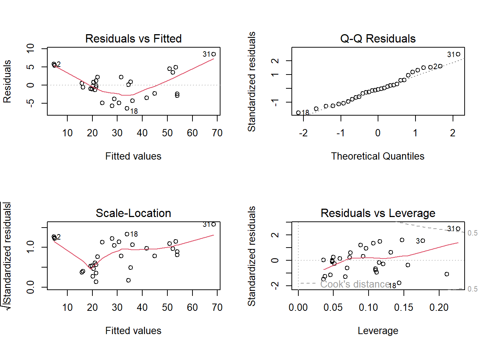
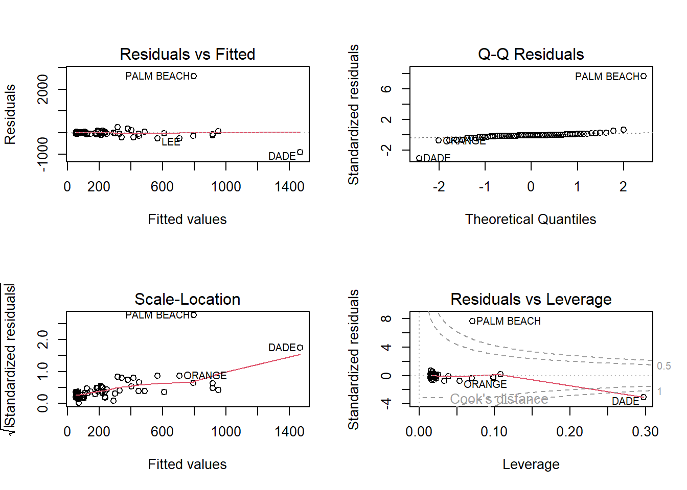
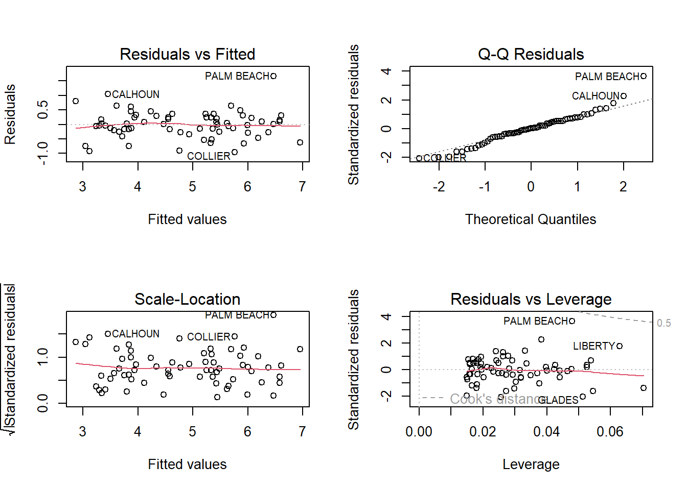

── Attaching core tidyverse packages ──────────────────────── tidyverse 2.0.0 ──
✔ dplyr 1.1.2 ✔ readr 2.1.4
✔ forcats 1.0.0 ✔ stringr 1.5.0
✔ ggplot2 3.4.2 ✔ tibble 3.2.1
✔ lubridate 1.9.2 ✔ tidyr 1.3.0
✔ purrr 1.0.1
── Conflicts ────────────────────────────────────────── tidyverse_conflicts() ──
✖ dplyr::filter() masks stats::filter()
✖ dplyr::lag() masks stats::lag()
ℹ Use the conflicted package (<http://conflicted.r-lib.org/>) to force all conflicts to become errors
Code
library(alr4)
Loading required package: car
Loading required package: carData
Attaching package: 'car'
The following object is masked from 'package:dplyr':
recode
The following object is masked from 'package:purrr':
some
Loading required package: effects
lattice theme set by effectsTheme()
See ?effectsTheme for details.
Code
library(smss)library(ggplot2)library(broom)
Question 1
(Data file: house.selling.price.2 from smss R package)
Code
# Load data filedata(house.selling.price.2)
For the house.selling.price.2 data the tables below show a correlation matrix and a model fit using four predictors of selling price.
Code
HousePriceVars <-lm(P ~ S + Be + Ba + New, data = house.selling.price.2)summary(HousePriceVars)
Call:
lm(formula = P ~ S + Be + Ba + New, data = house.selling.price.2)
Residuals:
Min 1Q Median 3Q Max
-36.212 -9.546 1.277 9.406 71.953
Coefficients:
Estimate Std. Error t value Pr(>|t|)
(Intercept) -41.795 12.104 -3.453 0.000855 ***
S 64.761 5.630 11.504 < 2e-16 ***
Be -2.766 3.960 -0.698 0.486763
Ba 19.203 5.650 3.399 0.001019 **
New 18.984 3.873 4.902 4.3e-06 ***
---
Signif. codes: 0 '***' 0.001 '**' 0.01 '*' 0.05 '.' 0.1 ' ' 1
Residual standard error: 16.36 on 88 degrees of freedom
Multiple R-squared: 0.8689, Adjusted R-squared: 0.8629
F-statistic: 145.8 on 4 and 88 DF, p-value: < 2.2e-16
A
With these four predictors: For backward elimination, which variable would be deleted first? Why?
In backward elimination, we start by including all variables in the model, pre-determine a significance level, and then at each stage delete the variable with the largest p-value and continue on until all variables are significant.
Looking at the regression output, Beds has the largest p-value (0.487) and would be deleted first.
B
With these four predictors: For forward selection, which variable would be added first? Why?
In forward selection, we start with no explanatory variable and a pre-determined significance level. At each step we add the variable that is the most significant (ie. the one with the smallest p-value) and then stop when there are no remaining variables that can make a significant partial contribution.
Looking at the regression output, Size has the smallest p-value (< 2e-16) and would be added first.
C
Why do you think that BEDS has such a large P-value in the multiple regression model, even though it has a substantial correlation with PRICE?
P S Be Ba New
P 1.0000000 0.8988136 0.5902675 0.7136960 0.3565540
S 0.8988136 1.0000000 0.6691137 0.6624828 0.1762879
Be 0.5902675 0.6691137 1.0000000 0.3337966 0.2672091
Ba 0.7136960 0.6624828 0.3337966 1.0000000 0.1820651
New 0.3565540 0.1762879 0.2672091 0.1820651 1.0000000
I would suspect multicollinearity. Multicollinarity refers to a situation where 2+ variables in a regression model are highly correlated with each other - that is, they are measuring either the same or similar things.
Larger houses typically have more bedrooms and bathrooms (you can only fill so much space with giant living rooms!) and the number of bathrooms is also frequently correlated with the number of bedrooms (houses with 2-4 bedrooms commonly have 2 bathrooms, etc.). If size, bedrooms, and bathrooms are all measuring similar things, multicollinearity is likely a factor.
D
Using software with these four predictors, find the model that would be selected using each criterion:
I’ll create the models using backwards elimination:
Code
# All four predictors: P ~ S + Be + Ba + Newsummary(HousePriceVars)
Call:
lm(formula = P ~ S + Be + Ba + New, data = house.selling.price.2)
Residuals:
Min 1Q Median 3Q Max
-36.212 -9.546 1.277 9.406 71.953
Coefficients:
Estimate Std. Error t value Pr(>|t|)
(Intercept) -41.795 12.104 -3.453 0.000855 ***
S 64.761 5.630 11.504 < 2e-16 ***
Be -2.766 3.960 -0.698 0.486763
Ba 19.203 5.650 3.399 0.001019 **
New 18.984 3.873 4.902 4.3e-06 ***
---
Signif. codes: 0 '***' 0.001 '**' 0.01 '*' 0.05 '.' 0.1 ' ' 1
Residual standard error: 16.36 on 88 degrees of freedom
Multiple R-squared: 0.8689, Adjusted R-squared: 0.8629
F-statistic: 145.8 on 4 and 88 DF, p-value: < 2.2e-16
Code
# eliminate BEDS due to highest p-value - now have three predictorsHousePriceNoBeds <-lm(P ~ S + Ba + New, data = house.selling.price.2)summary(HousePriceNoBeds)
Call:
lm(formula = P ~ S + Ba + New, data = house.selling.price.2)
Residuals:
Min 1Q Median 3Q Max
-34.804 -9.496 0.917 7.931 73.338
Coefficients:
Estimate Std. Error t value Pr(>|t|)
(Intercept) -47.992 8.209 -5.847 8.15e-08 ***
S 62.263 4.335 14.363 < 2e-16 ***
Ba 20.072 5.495 3.653 0.000438 ***
New 18.371 3.761 4.885 4.54e-06 ***
---
Signif. codes: 0 '***' 0.001 '**' 0.01 '*' 0.05 '.' 0.1 ' ' 1
Residual standard error: 16.31 on 89 degrees of freedom
Multiple R-squared: 0.8681, Adjusted R-squared: 0.8637
F-statistic: 195.3 on 3 and 89 DF, p-value: < 2.2e-16
All variables are now significant. For the sake of having another model to compare to, I’ll continue the backwards elimination and remove Baths, which is the next largest p-value.
Code
# eliminate BATHS, now have two predictors HousePriceNoBedsBath <-lm(P ~ S + New, data = house.selling.price.2)summary(HousePriceNoBedsBath)
Call:
lm(formula = P ~ S + New, data = house.selling.price.2)
Residuals:
Min 1Q Median 3Q Max
-47.207 -9.763 -0.091 9.984 76.405
Coefficients:
Estimate Std. Error t value Pr(>|t|)
(Intercept) -26.089 5.977 -4.365 3.39e-05 ***
S 72.575 3.508 20.690 < 2e-16 ***
New 19.587 3.995 4.903 4.16e-06 ***
---
Signif. codes: 0 '***' 0.001 '**' 0.01 '*' 0.05 '.' 0.1 ' ' 1
Residual standard error: 17.4 on 90 degrees of freedom
Multiple R-squared: 0.8484, Adjusted R-squared: 0.845
F-statistic: 251.8 on 2 and 90 DF, p-value: < 2.2e-16
Code
# Convert the model results to a data frameHousePrice_results <-bind_rows(data.frame(model_name ="HousePriceVars", glance(HousePriceVars)),data.frame(model_name ="HousePriceNoBeds", glance(HousePriceNoBeds)),data.frame(model_name ="HousePriceNoBedsBath", glance(HousePriceNoBedsBath)))HousePrice_results
Find the model that would be selected using each criterion:
1. R2
HousePriceVars - the model with all four predictors (Size, Beds, Baths, New).
2. Adjusted R2
HousePriceNoBeds - the model with three predictors (Size, Baths, New)
3. PRESS
Code
# PRESS of HousePriceVarsPRHousePriceVars <-resid(HousePriceVars)/(1-lm.influence(HousePriceVars)$hat)sum(PRHousePriceVars^2)
[1] 28390.22
Code
# PRESS of HousePriceNoBedsPRHousePriceNoBeds <-resid(HousePriceNoBeds)/(1-lm.influence(HousePriceNoBeds)$hat)sum(PRHousePriceNoBeds^2)
[1] 27860.05
Code
# PRESS of HousePriceNoBedsBathPRHousePriceNoBedsBath <-resid(HousePriceNoBedsBath)/(1-lm.influence(HousePriceNoBedsBath)$hat)sum(PRHousePriceNoBedsBath^2)
[1] 31066
HousePriceNoBeds - the model with three predictors (Size, Baths, New) - has the smallest PRESS statistic.
4. AIC
HousePriceNoBeds - the model with three predictors (Size, Baths, New) - has the smallest AIC statistic.
5. BIC
HousePriceNoBeds - the model with three predictors (Size, Baths, New) - has the smallest BIC statistic.
E
Explain which model you prefer and why.
The model with Size, Baths, and New as the predictors of Price is the model that I prefer. It had the highest adjusted r squared, lowest PRESS, lowest AIC, and lowest BIC. It also had the lowest p-value.
It appears to be the best fitting model, and accordingly, the one that I prefer.
Question 2
(Data file: trees from base R)
Code
# Load data filedata(trees)
From the documentation: “This data set provides measurements of the diameter, height and volume of timber in 31 felled black cherry trees. Note that the diameter (in inches) is erroneously labeled Girth in the data. It is measured at 4 ft 6 in above the ground.”
Tree volume estimation is a big deal, especially in the lumber industry. Use the trees data to build a basic model of tree volume prediction. In particular,
A
Fit a multiple regression model with the Volume as the outcome and Girth and Height as the explanatory variables
Code
# Multiple regression model with Volume as the outcome and Girth and Height as the explanatory variablesTreeVolume <-lm(Volume ~ Girth + Height, data = trees)summary(TreeVolume)
Call:
lm(formula = Volume ~ Girth + Height, data = trees)
Residuals:
Min 1Q Median 3Q Max
-6.4065 -2.6493 -0.2876 2.2003 8.4847
Coefficients:
Estimate Std. Error t value Pr(>|t|)
(Intercept) -57.9877 8.6382 -6.713 2.75e-07 ***
Girth 4.7082 0.2643 17.816 < 2e-16 ***
Height 0.3393 0.1302 2.607 0.0145 *
---
Signif. codes: 0 '***' 0.001 '**' 0.01 '*' 0.05 '.' 0.1 ' ' 1
Residual standard error: 3.882 on 28 degrees of freedom
Multiple R-squared: 0.948, Adjusted R-squared: 0.9442
F-statistic: 255 on 2 and 28 DF, p-value: < 2.2e-16
B
Run regression diagnostic plots on the model. Based on the plots, do you think any of the regression assumptions is violated?
Code
# Plot the diagnostic plotspar(mfrow =c(2, 2))plot(TreeVolume)

Based on the plots, do you think any of the regression assumptions is violated?
I think that three of the four plots violate regression assumptions.
On the Residuals vs. Fitted Values plot we want to see linearity and constant variance. The residuals should “bounce randomly” around the zero line, suggesting a linear and reasonable relationship. The residuals here do not. The residuals also do not roughly form a horizonal band around the zero line, suggesting that the variances of the error terms are not equal. This plot shows neither; there are patterns, and a funnel shape.
The Normal Q-Q plot looks as it should - the points on the plot follow a straight line and the points do not deviate significantly from the line.
The Scale-Location plot does not show constant variance. The line is not approximately horizontal.
Finally, the Resisuals vs. Leverage plot shows an outlier outside of Cook’s distance. This point with larger leverage indicates a larger potential influence on the regression model.
Question 3
(Data file: florida in alr R package)
Code
# Load florida data setdata(florida)
In the 2000 election for U.S. president, the counting of votes in Florida was controversial. In Palm Beach County in south Florida, for example, voters used a so-called butterfly ballot. Some believe that the layout of the ballot caused some voters to cast votes for Buchanan when their intended choice was Gore.
The data has variables for the number of votes for each candidate — Gore, Bush, and Buchanan.
A
Run a simple linear regression model where the Buchanan vote is the outcome and the Bush vote is the explanatory variable. Produce the regression diagnostic plots. Is Palm Beach County an outlier based on the diagnostic plots? Why or why not?
Code
# linear regression model where Buchanan vote is outcome and Bush vote is explanatory Buchanan <-lm(Buchanan ~ Bush, data = florida)summary(Buchanan)
Call:
lm(formula = Buchanan ~ Bush, data = florida)
Residuals:
Min 1Q Median 3Q Max
-907.50 -46.10 -29.19 12.26 2610.19
Coefficients:
Estimate Std. Error t value Pr(>|t|)
(Intercept) 4.529e+01 5.448e+01 0.831 0.409
Bush 4.917e-03 7.644e-04 6.432 1.73e-08 ***
---
Signif. codes: 0 '***' 0.001 '**' 0.01 '*' 0.05 '.' 0.1 ' ' 1
Residual standard error: 353.9 on 65 degrees of freedom
Multiple R-squared: 0.3889, Adjusted R-squared: 0.3795
F-statistic: 41.37 on 1 and 65 DF, p-value: 1.727e-08
Code
# Produce the regression diagnostic plotspar(mfrow =c(2, 2))plot(Buchanan)

Is Palm Beach County an outlier based on the diagnostic plots? Why or why not?
Yes, based on the diagnostic plots, Palm Beach County is an outlier.
On the Residuals vs. Fitted Values plot, the residuals largely “bounce randomly” around the zero line and form a roughly horizontal band around the zero line - with Dade and Palm Beach as significant outliers.
The Normal Q-Q plot follows a straight line and the points do not deviate significantly from the line - again, with two major exceptions: Dade, and Palm Beach. The Scale-Location plot is roughly horizonal, but again has a major exception: Palm Beach.
Finally, the Resisuals vs. Leverage plot shows outliers outside of Cook’s distance - Dade, and once again, Palm Beach.
B
Take the log of both variables (Bush vote and Buchanan Vote) and repeat the analysis in (A.) Does your findings change?
Code
# linear regression model where log(Buchanan) is outcome and log(Bush) is explanatory LogBuchanan <-lm(log(Buchanan) ~log(Bush), data = florida)summary(LogBuchanan)
Call:
lm(formula = log(Buchanan) ~ log(Bush), data = florida)
Residuals:
Min 1Q Median 3Q Max
-0.96075 -0.25949 0.01282 0.23826 1.66564
Coefficients:
Estimate Std. Error t value Pr(>|t|)
(Intercept) -2.57712 0.38919 -6.622 8.04e-09 ***
log(Bush) 0.75772 0.03936 19.251 < 2e-16 ***
---
Signif. codes: 0 '***' 0.001 '**' 0.01 '*' 0.05 '.' 0.1 ' ' 1
Residual standard error: 0.4673 on 65 degrees of freedom
Multiple R-squared: 0.8508, Adjusted R-squared: 0.8485
F-statistic: 370.6 on 1 and 65 DF, p-value: < 2.2e-16
Code
# Produce the regression diagnostic plotspar(mfrow =c(2, 2))plot(LogBuchanan)

Do your findings change?
The p-value has gotten smaller and the adjusted r squared has gone from 0.3795 to 0.8485, suggesting that the log-log model is a better-fitting model. When it comes to the diagnostic plots, however, Palm Beach is still a notable outlier on the Residuals vs. Fitted, Normal Q-Q, and Scale-Location plots. It is now within Cook’s distance on the Residuals vs. Leverage plot.
Source Code
---title: "Homework 5"author: "Darron Bunt"description: "Homework Assignment 5 - Darron Bunt"date: "05/07/2023"format: html: toc: true code-fold: true code-copy: true code-tools: truecategories: - hw5---```{r}library(tidyverse)library(alr4)library(smss)library(ggplot2)library(broom)```# Question 1 (Data file: house.selling.price.2 from smss R package)```{r}# Load data filedata(house.selling.price.2)```**For the house.selling.price.2 data the tables below show a correlation matrix and a model fit using four predictors of selling price.**```{r}HousePriceVars <-lm(P ~ S + Be + Ba + New, data = house.selling.price.2)summary(HousePriceVars)```#### A **With these four predictors: For backward elimination, which variable would be deleted first? Why?**In backward elimination, we start by including all variables in the model, pre-determine a significance level, and then at each stage delete the variable with the largest p-value and continue on until all variables are significant.Looking at the regression output, Beds has the largest p-value (0.487) and would be deleted first.#### B**With these four predictors: For forward selection, which variable would be added first? Why?**In forward selection, we start with no explanatory variable and a pre-determined significance level. At each step we add the variable that is the most significant (ie. the one with the smallest p-value) and then stop when there are no remaining variables that can make a significant partial contribution.Looking at the regression output, Size has the smallest p-value (< 2e-16) and would be added first. #### C**Why do you think that BEDS has such a large P-value in the multiple regression model, even though it has a substantial correlation with PRICE?**```{r}CorHousePriceVars <-cor(house.selling.price.2)CorHousePriceVars```I would suspect multicollinearity. Multicollinarity refers to a situation where 2+ variables in a regression model are highly correlated with each other - that is, they are measuring either the same or similar things. Larger houses typically have more bedrooms and bathrooms (you can only fill so much space with giant living rooms!) and the number of bathrooms is also frequently correlated with the number of bedrooms (houses with 2-4 bedrooms commonly have 2 bathrooms, etc.). If size, bedrooms, and bathrooms are all measuring similar things, multicollinearity is likely a factor. #### D**Using software with these four predictors, find the model that would be selected using each criterion:**I'll create the models using backwards elimination:```{r}# All four predictors: P ~ S + Be + Ba + Newsummary(HousePriceVars)# eliminate BEDS due to highest p-value - now have three predictorsHousePriceNoBeds <-lm(P ~ S + Ba + New, data = house.selling.price.2)summary(HousePriceNoBeds)```All variables are now significant. For the sake of having another model to compare to, I'll continue the backwards elimination and remove Baths, which is the next largest p-value.```{r}# eliminate BATHS, now have two predictors HousePriceNoBedsBath <-lm(P ~ S + New, data = house.selling.price.2)summary(HousePriceNoBedsBath)``````{r}# Convert the model results to a data frameHousePrice_results <-bind_rows(data.frame(model_name ="HousePriceVars", glance(HousePriceVars)),data.frame(model_name ="HousePriceNoBeds", glance(HousePriceNoBeds)),data.frame(model_name ="HousePriceNoBedsBath", glance(HousePriceNoBedsBath)))HousePrice_results```**Find the model that would be selected using each criterion:****1. R2**HousePriceVars - the model with all four predictors (Size, Beds, Baths, New).**2. Adjusted R2**HousePriceNoBeds - the model with three predictors (Size, Baths, New)**3. PRESS**```{r}# PRESS of HousePriceVarsPRHousePriceVars <-resid(HousePriceVars)/(1-lm.influence(HousePriceVars)$hat)sum(PRHousePriceVars^2)# PRESS of HousePriceNoBedsPRHousePriceNoBeds <-resid(HousePriceNoBeds)/(1-lm.influence(HousePriceNoBeds)$hat)sum(PRHousePriceNoBeds^2)# PRESS of HousePriceNoBedsBathPRHousePriceNoBedsBath <-resid(HousePriceNoBedsBath)/(1-lm.influence(HousePriceNoBedsBath)$hat)sum(PRHousePriceNoBedsBath^2)```HousePriceNoBeds - the model with three predictors (Size, Baths, New) - has the smallest PRESS statistic.**4. AIC**HousePriceNoBeds - the model with three predictors (Size, Baths, New) - has the smallest AIC statistic.**5. BIC**HousePriceNoBeds - the model with three predictors (Size, Baths, New) - has the smallest BIC statistic.#### E**Explain which model you prefer and why.**The model with Size, Baths, and New as the predictors of Price is the model that I prefer. It had the highest adjusted r squared, lowest PRESS, lowest AIC, and lowest BIC. It also had the lowest p-value. It appears to be the best fitting model, and accordingly, the one that I prefer.# Question 2(Data file: trees from base R)```{r}# Load data filedata(trees)```From the documentation:“This data set provides measurements of the diameter, height and volume of timber in 31 felled black cherry trees. Note that the diameter (in inches) is erroneously labeled Girth in the data. It is measured at 4 ft 6 in above the ground.”*Tree volume estimation is a big deal, especially in the lumber industry. Use the trees data to build a basic model of tree volume prediction. In particular,*#### A**Fit a multiple regression model with the Volume as the outcome and Girth and Height as the explanatory variables**```{r}# Multiple regression model with Volume as the outcome and Girth and Height as the explanatory variablesTreeVolume <-lm(Volume ~ Girth + Height, data = trees)summary(TreeVolume)```#### B**Run regression diagnostic plots on the model. Based on the plots, do you think any of the regression assumptions is violated?**```{r}# Plot the diagnostic plotspar(mfrow =c(2, 2))plot(TreeVolume)```**Based on the plots, do you think any of the regression assumptions is violated?**I think that three of the four plots violate regression assumptions. On the Residuals vs. Fitted Values plot we want to see linearity and constant variance. The residuals should "bounce randomly" around the zero line, suggesting a linear and reasonable relationship. The residuals here do not. The residuals also do not roughly form a horizonal band around the zero line, suggesting that the variances of the error terms are not equal. This plot shows neither; there are patterns, and a funnel shape. The Normal Q-Q plot looks as it should - the points on the plot follow a straight line and the points do not deviate significantly from the line. The Scale-Location plot does not show constant variance. The line is not approximately horizontal.Finally, the Resisuals vs. Leverage plot shows an outlier outside of Cook's distance. This point with larger leverage indicates a larger potential influence on the regression model. # Question 3(Data file: florida in alr R package)```{r}# Load florida data setdata(florida)```In the 2000 election for U.S. president, the counting of votes in Florida was controversial. In Palm Beach County in south Florida, for example, voters used a so-called butterfly ballot. Some believe that the layout of the ballot caused some voters to cast votes for Buchanan when their intended choice was Gore.*The data has variables for the number of votes for each candidate — Gore, Bush, and Buchanan.*#### A**Run a simple linear regression model where the Buchanan vote is the outcome and the Bush vote is the explanatory variable. Produce the regression diagnostic plots. Is Palm Beach County an outlier based on the diagnostic plots? Why or why not?**```{r}# linear regression model where Buchanan vote is outcome and Bush vote is explanatory Buchanan <-lm(Buchanan ~ Bush, data = florida)summary(Buchanan)``````{r}# Produce the regression diagnostic plotspar(mfrow =c(2, 2))plot(Buchanan)```**Is Palm Beach County an outlier based on the diagnostic plots? Why or why not?**Yes, based on the diagnostic plots, Palm Beach County is an outlier. On the Residuals vs. Fitted Values plot, the residuals largely "bounce randomly" around the zero line and form a roughly horizontal band around the zero line - with Dade and Palm Beach as significant outliers. The Normal Q-Q plot follows a straight line and the points do not deviate significantly from the line - again, with two major exceptions: Dade, and Palm Beach. The Scale-Location plot is roughly horizonal, but again has a major exception: Palm Beach. Finally, the Resisuals vs. Leverage plot shows outliers outside of Cook's distance - Dade, and once again, Palm Beach. #### B**Take the log of both variables (Bush vote and Buchanan Vote) and repeat the analysis in (A.) Does your findings change?**```{r}# linear regression model where log(Buchanan) is outcome and log(Bush) is explanatory LogBuchanan <-lm(log(Buchanan) ~log(Bush), data = florida)summary(LogBuchanan)``````{r}# Produce the regression diagnostic plotspar(mfrow =c(2, 2))plot(LogBuchanan)```**Do your findings change?**The p-value has gotten smaller and the adjusted r squared has gone from 0.3795 to 0.8485, suggesting that the log-log model is a better-fitting model. When it comes to the diagnostic plots, however, Palm Beach is still a notable outlier on the Residuals vs. Fitted, Normal Q-Q, and Scale-Location plots. It is now within Cook's distance on the Residuals vs. Leverage plot.